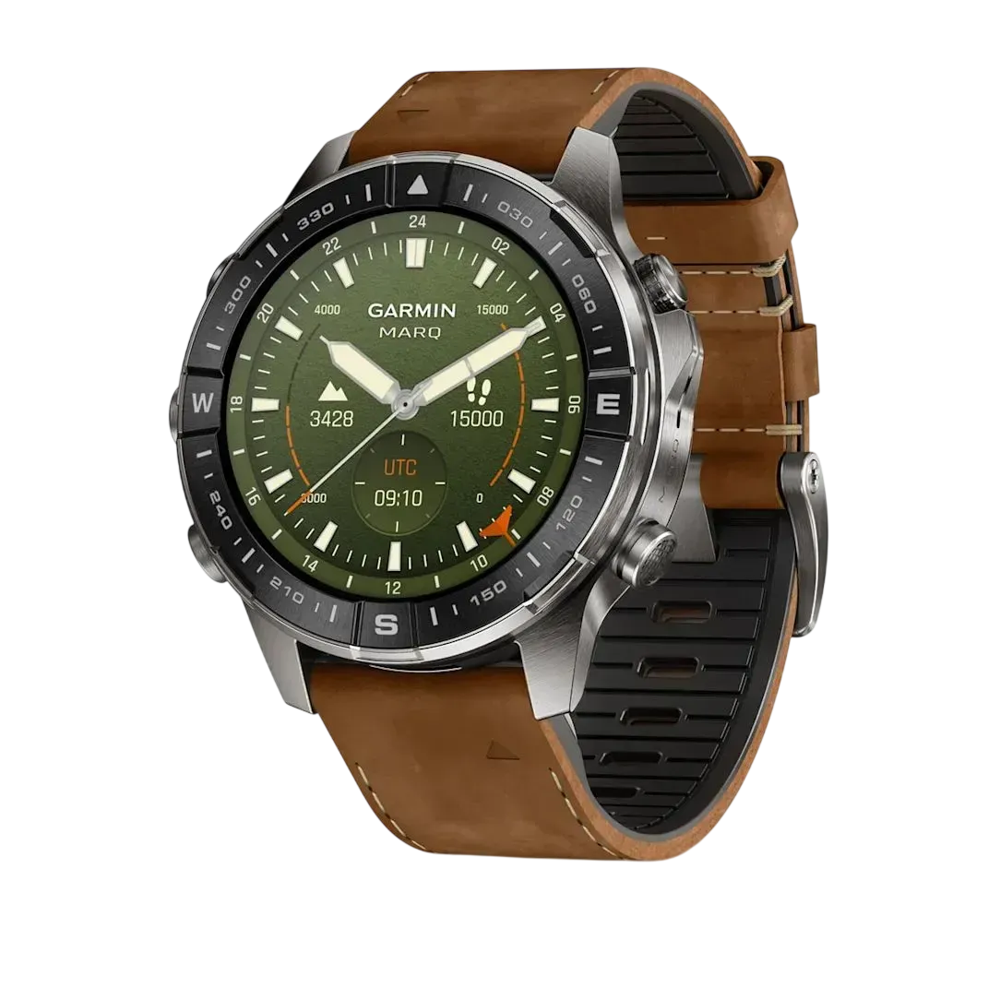
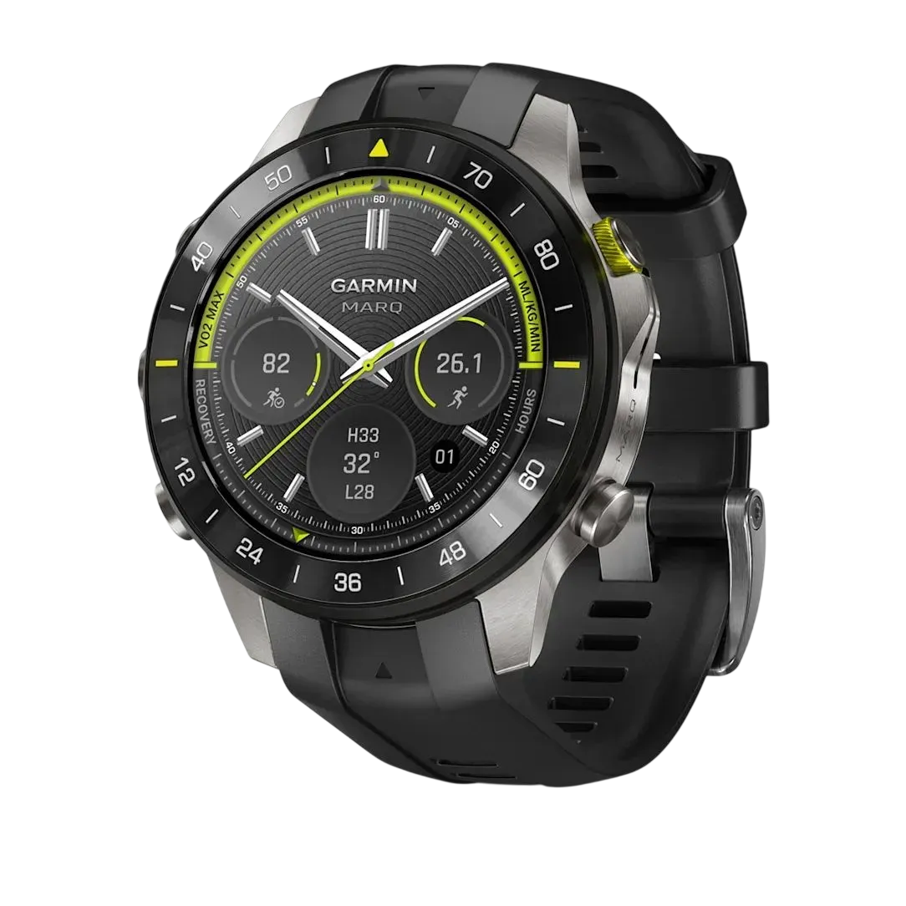
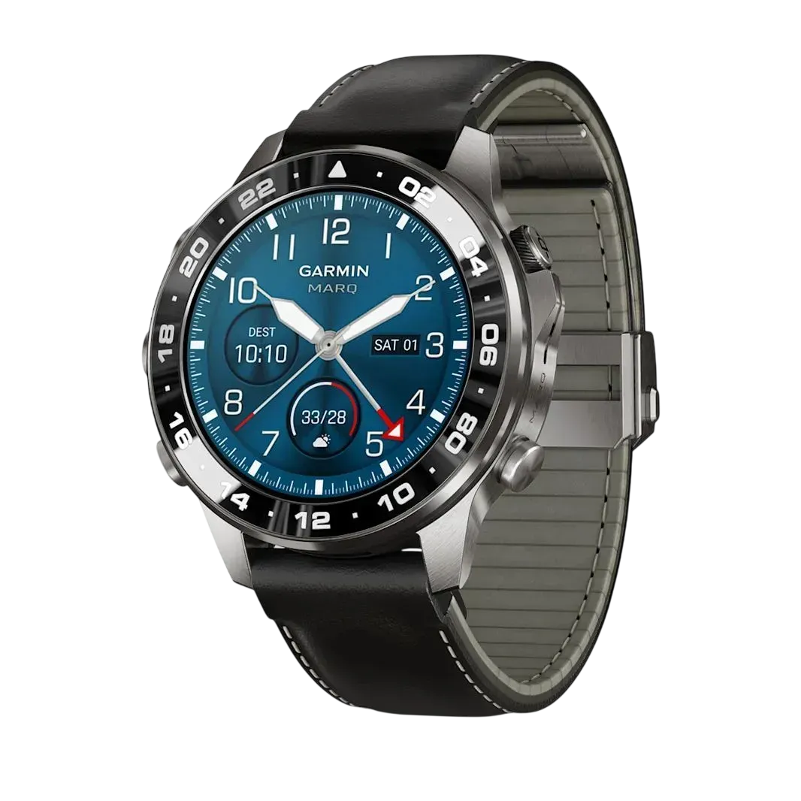
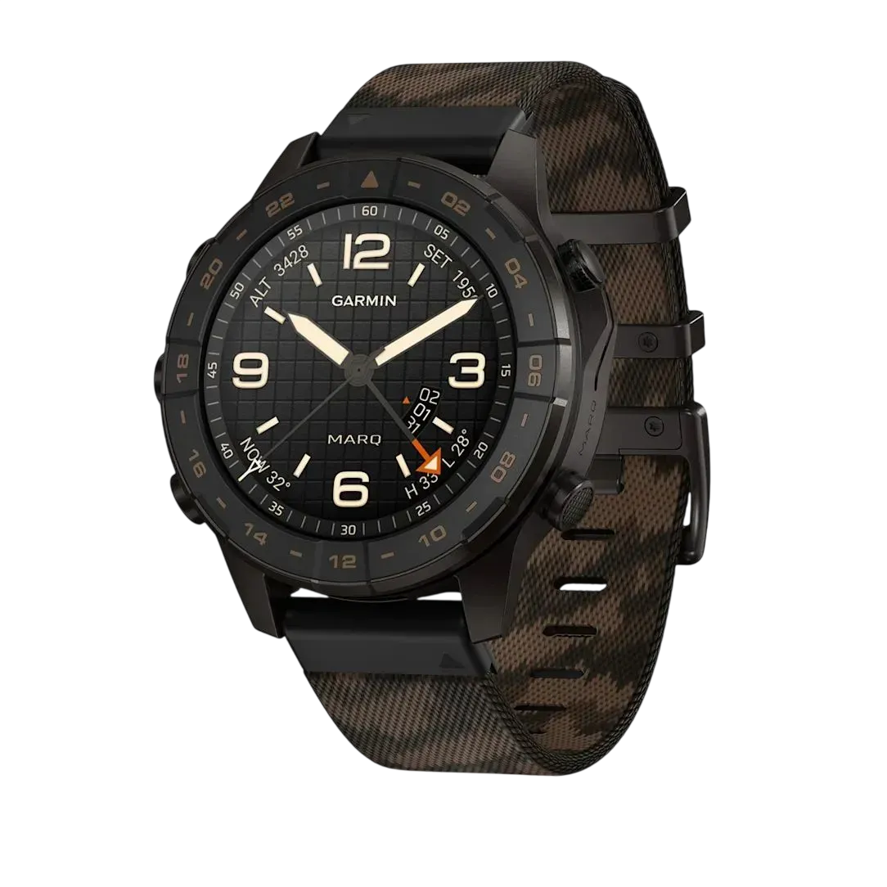
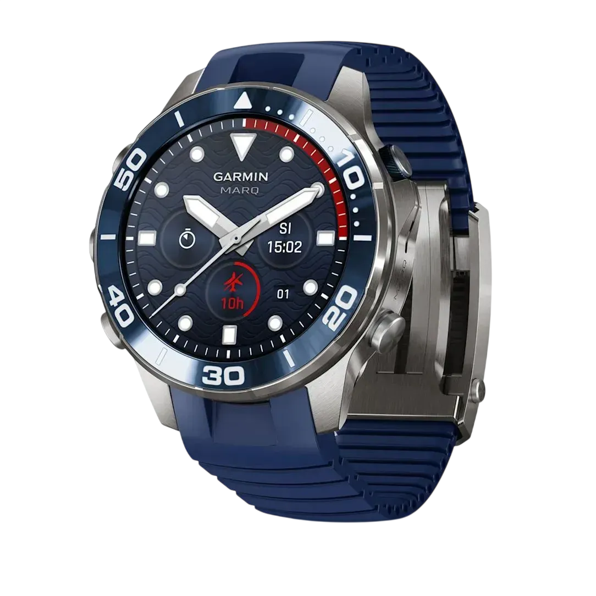
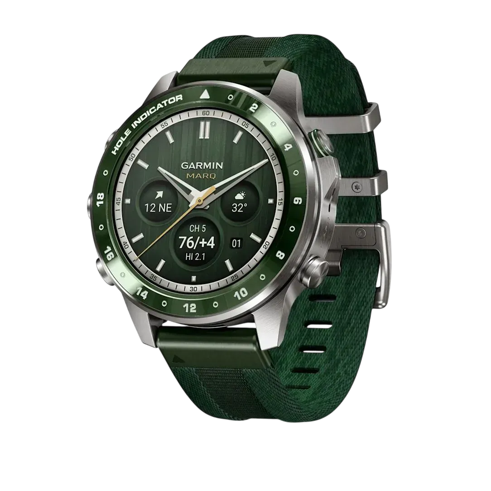

ЕКСПЕДИЦІЇ / MARQ GEN 3
За межами
звичного.
MARQ Adventurer: для тих, хто обирає нові маршрути та відкриття.
Титан Grade 5Сапфірове скло
До 18 днівУ режимі годинника
Карти світуНавігація на зап’ясті
inReachLTE та супутник*
ОБЕРІТЬ СВІЙ ХАРАКТЕР
Шість граней MARQ.





ТЕХНОЛОГІЇ БЕЗ КОМПРОМІСІВ